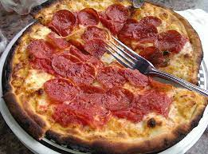

Description:
Easy to make and tasty Protein dough pizza
Ingredients:
- Low Fat Mozzella Cheese
- Your Favorite Pizza Sause
- Self Rising Flour
- Turkey Pepperoni
- Italian Seasoning
- Salt
- Pepper
- Greek Yogurt
Steps:
- Combine self rising flour, Greek yogurt, and Italian Seasoning to make your dough.
- Once Dough combines spray pizza pan with oil and spread dough to desired size.
- Coil outter dough to make a thicker crust if so desires.
- Put pizza sause and Mozzella. Spread evenly through out the pizza.
- Add Turkey Pepperoni as much as you want.
- Optional: Add more Italian Seasoning on top of pizza before putting it on the oven.
- Preheat Oven to 400F. Once at that temperture, let it bake for 30-45 mins depending how crunchy you desire it to be.